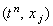

|
В настоящем учебном пособии изучается два метода,
позволяющих исследовать устойчивость разностных схем. Первый из них называется
гармоническим или спектральным методом анализа разностных схем. Второй - метод тестовых
задач - будет описан в конце курса.
Рассмотрим одномерное дифференциальное уравнение
параболического типа, свободный член которого не включает искомую функцию u:
Запишем для него явную разностную схему:
Погрешность решения разностной схемы (3.4)
в точке  можно представить с помощью соотношения:
Здесь - решение разностной схемы (3.4)
в точке ;
- истинное решение исходного дифференциального уравнения (3.3)
в точке . Выражая из данного соотношения
и подставляя в разностную схему (3.4), получаем:
В разделе "Порядок аппроксимации разностной схемы"
было доказано, что разностная схема (3.4) имеет порядок аппроксимации:
Следовательно, имеет место следующее равенство:
С учётом данного выражения получаем разностную схему для погрешности решения:
|